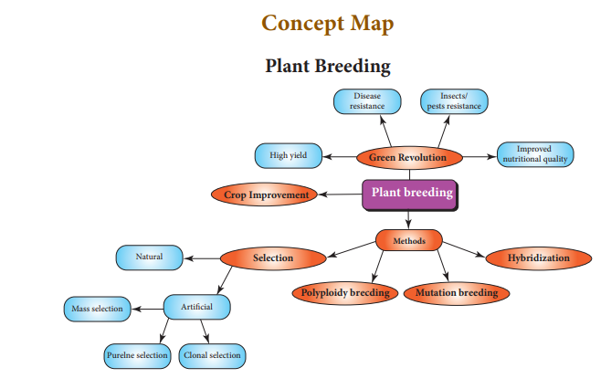
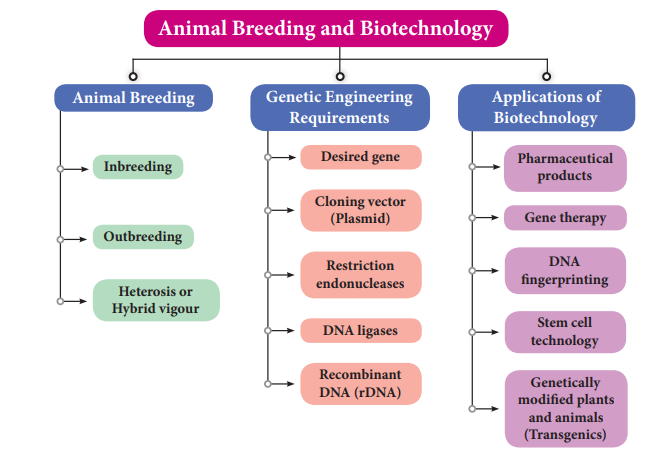

TEXTBOOK EVALUATION
1 Choose the correct answer
- Which method of crop improvement can be practised by a farmer if he is inexperienced?
- clonal selection
- mass selection
- pure line selection
- hybridisation
- PusaKomal is a disease resistant variety of dash.
- Sugarcane
- Rice
- cow pea
- maize
- Himgiri developed by hybridisation and selection for disease resistance against rust pathogens is a variety of dash.
- Chilli
- Maize
- Sugarcane
- wheat
- The miracle rice which saved millions of lives and celebrated its 50th birthday is dash.
- IR 8
- IR 24
- Atomita 2
- Ponni
- Which of the following is used to produce products useful to humans by biotechnology techniques?
- enzyme from organism
- live organism
- vitamins
- both (a) and (b)
- We can cut the DNA with the help of
- Scissors
- restriction endonucleases
- Knife
- RNAase
- rDNA is a
- vector DNA
- circular DNA
- recombinant of vector DNA and desired DNA
- satellite DNA
- DNA fingerprinting is based on the principle of identifying dash sequences of DNA
- single stranded
- Mutated
- Polymorphic
- repetitive
- Organisms with modified endogenous gene or a foreign gene are also known as
- transgenic organisms
- genetically modified
- mutated
- both a and b
- In a hexaploidy wheat (2n = 6 x = 42) the haploid (n) and the basic(x) number of chromosomes respectively are
- n = 7 and x = 21
- n = 21 and x = 21
- n = 7 and x = 7
- n = 21 and x = 7
2 Fill in the blanks
- Economically important crop plants with superior quality are raised by dash.
- A protein rich wheat variety is dash.
- Dash is the chemical used for doubling the chromosomes.
- The scientific process which produces crop plants enriched with desirable nutrients is called dash.
- Rice normally grows well in alluvial soil, but dash is a rice variety produced by mutation breeding that grows well in saline soil.
- Dash Technique made it possible to genetically engineer living organism.
- Restriction endonucleases cut the DNA molecule at specific positions known as dash.
- Similar DNA fingerprinting is obtained for dash.
- Dash cells are undifferentiated mass of cells.
- In gene cloning the DNA of interest is integrated in a dash.
3 State whether true or false. If false, write the correct statement
- Raphano brassica is a man-made tetraploid produced by colchicine treatment.
- The process of producing an organism with more than two sets of chromosomes is called mutation.
- A group of plants produced from a single plant through vegetative or asexual reproduction are called a pure line.
- Iron fortified rice variety determines the protein quality of the cultivated plant
- Golden rice is a hybrid.
- Bt gene from bacteria can kill insects.
- In vitro fertilisation means the fertilisation done inside the body.
- DNA fingerprinting technique was developed by Alec Jeffrey.
- Molecular scissors refer to DNA ligases.
4 Match the following
Column A Column B
- Sonalika Phaseolus mungo
- IR 8 Sugarcane
- Sac charum Semi-dwarf wheat
- Mung No. 1 Ground nut
- TMV – 2 Semi-dwarf Rice
- Insulin Bacillus huringienesis
- Bt toxin Beta carotene
- Golden rice first hormone produced using rDNA technique
5 Understand the assertion statement, justify the reason given and choose the correct choice
a) Assertion is correct and reason is wrong
b) Reason is correct and the assertion is wrong
c) Both assertion and reason are correct
d) Both assertion and reason are wrong.
- Assertion: Hybrid is superior than either of its parents.
Reason: Hybrid vigour is lost upon inbreeding.
- Assertion: Colchicine reduces the chromosome number.
Reason: It promotes the movement of sister chromatids to the opposite poles.
- Assertion: rDNA is superior over hybridisation techniques.
Reason: Desired genes are inserted without introducing the undesirable genes in target organisms.
6 Answer in a sentence
- Give the name of wheat variety having higher dietary fibre and protein.
- Semi-dwarf varieties were introduced in rice. This was made possible by the presence of dwarfing gene in rice. Name this dwarfing gene.
- Define genetic engineering.
- Name the types of stem cells.
- What are transgenic organisms?
- State the importance of biofertilizer.
7 Short answers questions
- Discuss the method of breeding for disease resistance.
- Name three improved characteristics of wheat that helped India to achieve high productivity.
- Name two maize hybrids rich in amino acid lysine
- Distinguish between
- somatic gene therapy and germ line gene therapy
- undifferentiated cells and differentiated cells
- State the applications of DNA fingerprinting technique.
- How are stem cells useful in regenerative process?
- Differentiate between outbreeding and inbreeding.
8 Long answers questions
- What are the effects of hybrid vigour in animals.
- Describe mutation breeding with an example.
- Biofortification may help in removing hidden hunger. How?
- With a neat labelled diagram explain the techniques involved in gene cloning.
- Discuss the importance of biotechnology in the field of medicine.
9 Higher Order Thinking Skills (HOTS)
- A breeder wishes to incorporate desirable characters into the crop plants. Prepare a list of characters he will incorporate
- Organic farming is better than Green Revolution. Give reasons
- Polyploids are characterised by gigantism. Justify your answer.
- ‘P’ is a gene required for the synthesis of vitamin A. It is integrated with genome of ‘Q’ to produce genetically modified plant ‘R’.
- What is P, Q and R?
- State the importance of ‘R’ in India.
REFERENCE BOOKS
1. Chaudhari, H.K., Elementary Principles of Plant Breeding, 2nd Edition.
2. Dubey, R.C., A Text book of Biotechnology. 5th Edition. S. Chand and Company Pvt. Ltd. NewDelhi. INTERNET RESOURCES
https://www.embibe.com/study/transgeniccow-rosie-concept //https://en.wikipedia.org/wiki/DNA_profiling
https://www.krishijagran.com/news/tomatoat shoots-potato-in-roots

